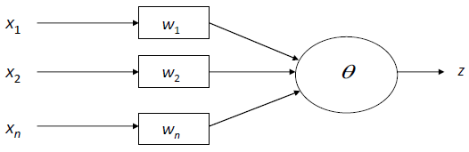
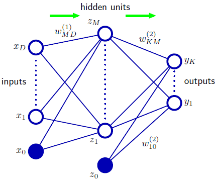
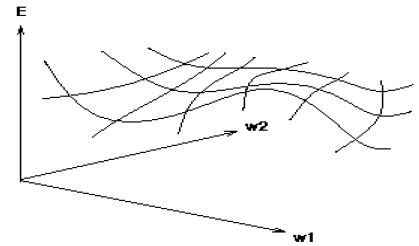
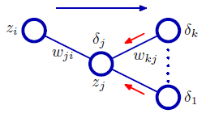

1 Deep Learning
- Deep learning : A sub area of machine learning, that is today understood as representation learning.
- Inspired by the human brain.
- How do Neural Networks learn:
- We initialize the weights with random value.
- Then present a trining pattern to the network.
- Feed it through tho get output. (feed forward)
- compare with target output.
- Adjust weights based on the error.
- And so on …
- Deep learning models can learn complex decision boundaries.
2 Perceptrons (Linear Models)
Consider the below pic:

Mathematical formulation is given as below:
\displaystyle z = \left\lbrace \begin{array}{ccc} 1 & \text{if} & \displaystyle \sum_{i=1}^n x_iw_i \ge \theta \\ 0 & \text{if} & \displaystyle \sum_{i=1}^n x_iw_i < \theta \end{array} \right.Learn weight such that the objective function is maximized.
Loss calculation :
\Delta W_i = c(t-z)X_i
where W_i is the weight from input i to perceptron node, c is the learning rate, t_j is the target for the current instance, z is the current output, and X_i is i^{th} inputLeast perturbation principle
- only change weights if there is an error
- small c sufficient to make current pattern corret
- scale by X_i
create a perceptron node with n inputs.
Iteratively apply a pattern from the training set and apply the perceptron rule
Each iteration through the training set is an epoch
continue training until total training set error ceases to improve
Peceptron Convergence Theorem : Guaranteed to find a solution in finite time if a solution exists
3 Multi Layer Perceptrons
3.1 MLP From PRML book
Network with inputs, one hidden unit and outputs:
The output of the above network can be given as follows:
\displaystyle y_{k}({\bf x},{\bf w})=\sigma\left(\sum_{j=1}^{M}w_{k j}^{(2)}h\left(\sum_{i=1}^{D}w_{j i}^{(1)}x_{i}+w_{j0}^{(1)}\right)+w_{k0}^{(2)}\right) This equation is also interpreted as forward propagation of information through the newwork.
It should be emphasized that these diagrams do not represent probabilistic graphical models, because the internal nodes represent deterministic variables rather than stochastic ones.The above equation can be written as below if bias is absorbed into the set of weight by defining additional input variable x_0 whose value is clamped at x_0=1
\displaystyle y_{k}({\bf x},{\bf w})=\sigma\left(\sum_{j=0}^{M}w_{k j}^{(2)}h\left(\sum_{i=0}^{D}w_{j i}^{(1)}x_{i}\right)\right)A key difference among neural network and perceptron, is that the neural network uses continuous sigmoidal non-linearities in the hidden units, whereas the perceptron uses step-function non-linearities.
If the activation functions of all the hidden units in a network are taken to be linear, then for any such network we can always find an equivalent network without hidden units.
In principle, a network with sigmoidal hidden units can always mimic skip layer connections by using a sufficiently small first-layer weight that, over its operating range.
In practice, however, it may be advantageous to include skip-layer connections explicitly.
3.2 MLP Form lecture PDF
- Extension of perceptrons to multiple layers
- Initialize network with random weights
- For all training cases ( called examples):
- present training inputs to network and calculate output
- for all layers (starting with output layer, back to input layer):
- compare network output with correct putput
- Adapt weight in current layer
- Method for Learning Weights in feed forward nets
- Can’t use Perceptron Rule
- No teacher values (loss) are possible for hidden units.
- Use Gradient decent to minimize the error
- Propagate the deltas to adjust for errors backward from outputs to hidden layers to inputs
- The algorithm can be summarized as follows:
- Computes the error term for the output units using the observed error.
- From output layer , repeat
- Propagating the error term back to the previous layer and updating the weights between the two layers until the earliest layer is reached.
- Can’t use Perceptron Rule
- Algorithm in detail:
- Initialize weights (typically random)
- Keep doing epoch
- For each example e in the training set do
- Forward Pass to compute
- y = neural new output (network , e)
- miss = (T-y) at each output unit
- backward pass to calculate deltas to weights
- update all weights
- Forward Pass to compute
- end
- For each example e in the training set do
- until tuning set error stops improving
4 Error Backpropagation
4.1 Backpropagation From PRML book
Think of the N weights as a point in an N-dimensional space
Many error functions fo practical interest, comprise a sum of terms, one for each data point in training set, so that
\displaystyle E(\mathbf{w})=\sum_{n=1}^{N}E_{n}(\mathbf{w})Error function for one particular input patter n takes the form
\displaystyle E_{n}={\frac{1}{2}}\sum_{k}(y_{n k}-t_{n k})^{2} where y_{n k}=y_{k}(\mathbf{x}_{n},\mathbf{w})The gradient of this error with respect to a weight w_{ji} is given by
\displaystyle {\frac{\partial E_{n}}{\partial w_{j i}}}=(y_{n j}-t_{n j})x_{n i}In a general feed-forward network, each unit computes a weighted sum of its inputs of the form:
\displaystyle a_{j}=\sum_{i}w_{j i}z_{i} where z_i is the activation of a unit, or input, that sends a connection to unit j, and w_{ji} is the weight associated with that connectionA non-linear activation function h(.) transforms a_j to produce z_j of unit j in the form
z_{j}=h(a_{j}) Note z_i in equation a_{j}=\sum_{i}w_{j i}z_{i} could be an input, and the unit j in equation z_{j}=h(a_{j}) could be an outputNow we consider to evaluate derivative of E_n with respect to w_{ji}, E_n depends on the weight w_{ji} only via the summed input a_j to unit j. Applying chain rule for partial derivatives we get
\displaystyle \frac{\partial E_{n}}{\partial w_{j i}}=\frac{\partial E_{n}}{\partial a_{j}}\frac{\partial a_{j}}{\partial w_{j i}} \tag{1}Consider a useful notation
\displaystyle \delta_{j}\equiv\frac{\partial{ E}_{n}}{\partial a_{j}} \tag{2}we can find derivative of a_j with respect to w_{ji} using a_{j}=\sum_{i}w_{j i}z_{i}, we get
\displaystyle {\frac{\partial a_{j}}{\partial w_{j i}}}=z_{i} \tag{3}Using above equation (1),(2) \text{ and },(3) we get
\displaystyle \frac{\partial E_{n}}{\partial w_{j i}}=\delta_{j}z_{i}This tells us required derivative is obtained simply by multiplying the value of \delta for the unit at the output end of the weight by the value of z for the unit at the input end of the weight.
For output unit we have
\delta_k = y_k - t_kFor hidden units, we again make use of chain rule for partial derivatives

\displaystyle \delta_{j}\equiv\frac{\partial E_{n}}{\partial a_{j}}=\sum_{k}\frac{\partial E_{n}}{\partial a_{k}}\frac{\partial a_{k}}{\partial a_{j}} \tag{4}Now we know that
\displaystyle \frac{\partial E_{n}}{\partial a_{k}} = \delta _kalso, a_k =\sum_j w_{kj} z_j \;\textrm{and}\;z_j =h(a_j )
so, \displaystyle \frac{\partial a_{k}}{\partial a_{j}} = \frac{\partial \sum_{j}w_{k j}h(a_{j})}{\partial a_{j}} = w_{k j} h^\prime(a_{j}) putting value of \frac{\partial E_{n}}{\partial a_{k}} and \frac{\partial a_{k}}{\partial a_{j}} in the equation (4) we get \displaystyle \delta_{j}=h^{\prime}(a_{j})\sum_{k}w_{k j}\delta_{k}
In short what we discussed till now
\begin{align*} \displaystyle \frac{\partial E_{n}}{\partial w_{j i}}&=\frac{\partial E_{n}}{\partial a_{j}}\frac{\partial a_{j}}{\partial w_{j i}}\\ &= \left( \sum_{k}{\frac{\partial E_{n}}{\partial a_{k}}}{\frac{\partial a_{k}}{\partial a_{j}}} \right) \frac{\partial a_{j}}{\partial w_{j i}}\\ &= \left( \sum_{k}{\frac{\partial E_{n}}{\partial a_{k}}}\left( w_{k j}h^{\prime}(a_{j}) \right) \right) \frac{\partial a_{j}}{\partial w_{j i}}\\ &= h^{\prime}(a_{j})\left( \sum_{k}{\frac{\partial E_{n}}{\partial a_{k}}}w_{k j} \right) \frac{\partial a_{j}}{\partial w_{j i}}\\ &= h^{\prime}(a_{j})\left( \sum_{k}{\frac{\partial E_{n}}{\partial a_{k}}}w_{k j} \right) z_i\\ &= h^{\prime}(a_{j}) z_i \left( \sum_{k}{\frac{\partial E_{n}}{\partial a_{k}}}w_{k j} \right)\\ \end{align*}In sort what we discussed till now with little more elaboration
\displaystyle y_{k}({\bf x},{\bf w})= \overbrace{\sigma \left( \underbrace{ \sum_{j=0}^{M}w_{k j}^{(2)} \times \overbrace{h\left(\underbrace{\sum_{i=0}^{D}w_{j i}^{(1)} \times z_{i}}_{a_j} \right)}^{z_j}}_{a_k} \right)}^{z_k}\displaystyle y_{k}({\bf x},{\bf w})= \overbrace{ \underbrace{\sigma}_{\text{activation fucntion at output }} \left( \underbrace{ \sum_{j=0}^{M}w_{k j}^{(2)} \times \overbrace{ \underbrace{h}_{\text{activation fucntion at hidden}} \left(\underbrace{\sum_{i=0}^{D}w_{j i}^{(1)} \times \overbrace{z_{i}}^{\text{from last layer or input }x_i} }_{a_j} \right)}^{z_j}}_{a_k} \right)}^{z_k}
\displaystyle E_{n}={\frac{1}{2}}\sum_{k}(y_{k}-t_{k})^{2}
Till now we had below expression :
\displaystyle \frac{\partial E_{n}}{\partial w_{j i}}= \left( \sum_{k} \frac{\partial E_{n}}{\partial a_{k}} {\frac{\partial a_{k}}{\partial a_{j}}} \right) \frac{\partial a_{j}}{\partial w_{j i}} But if we consider activation function \sigma at out layer and y_k = z_k = \sigma (a_k) we get :
\begin{align*} \displaystyle \frac{\partial E_{n}}{\partial w_{j i}}&= \left(\sum_{k} \frac{\partial E_{n}}{\partial z_{k}} {\frac{\partial z_{k}}{\partial a_{k}}} {\frac{\partial a_{k}}{\partial a_{j}}}\right)\frac{\partial a_{j}}{\partial w_{j i}}\\ &= \left( \sum_{k} \frac{\partial E_{n}}{\partial z_{k}} {\frac{\partial z_{k}}{\partial a_{k}}} {\frac{\partial \sum_{j}w_{k j}z_{j}}{\partial a_{j}}} \right) \frac{\partial a_{j}}{\partial w_{j i}}\\ &= \left( \sum_{k} \frac{\partial E_{n}}{\partial z_{k}} {\frac{\partial z_{k}}{\partial a_{k}}} {\frac{\partial \sum_{j}w_{k j}h(a_{j})}{\partial a_{j}}} \right) \frac{\partial a_{j}}{\partial w_{j i}}\\ &= \left( \sum_{k} \frac{\partial E_{n}}{\partial z_{k}} {\frac{\partial z_{k}}{\partial a_{k}}} w_{kj}h^\prime(a_j) \right) \frac{\partial a_{j}}{\partial w_{j i}}\\ &= \left( \sum_{k} \frac{\partial E_{n}}{\partial z_{k}} {\frac{\partial z_{k}}{\partial a_{k}}} w_{kj} \right) h^\prime(a_j) \frac{\partial a_{j}}{\partial w_{j i}}\\ &= \left( \sum_{k} \frac{\partial E_{n}}{\partial z_{k}} {\frac{\partial z_{k}}{\partial a_{k}}} w_{kj} \right) h^\prime(a_j) \frac{\partial \sum_{i}w_{j i}z_{i}}{\partial w_{j i}}\\ &= \left(\sum_{k}\frac{\partial E_{n}}{\partial z_{k}}{\frac{\partial z_{k}}{\partial a_{k}}} w_{kj} \right) h^\prime(a_j) z_i\\ \end{align*}Since z_k is same as y_k, we can replace z_k with y_k in above equation
\displaystyle \frac{\partial E_{n}}{\partial w_{j i}}= \left( \sum_{k} {\frac{\partial E_{n}}{\partial y_{k}}} {\frac{\partial y_{k}}{\partial a_{k}}} w_{kj} \right) h^\prime(a_j) z_i we know y_k=z_k=\sigma (a_k) so we get
\begin{align*} \displaystyle \frac{\partial E_{n}}{\partial w_{j i}}&= \left( \sum_{k} {\frac{\partial E_{n}}{\partial y_{k}}} {\frac{\partial \sigma (a_k)}{\partial a_{k}}} w_{kj} \right) h^\prime(a_j) z_i\\ &= \underbrace{\left( \sum_{k} \underbrace{\frac{\partial E_{n}}{\partial y_{k}}}_{(y_k-t_k)} \times \overbrace{ \frac{\partial \sigma (a_k)}{\partial a_{k}}}^{z_k(1-z_k) \text{ or }y_k(1-y_k)} \times w_{kj} \right)}_{\text{miss}} \underbrace{h^\prime(a_j) }_{ z_j(1-z_j)} z_i\\ &= \left( \sum_{k} (y_k-t_k) y_k (1-y_k)w_{kj} \right) z_j(1-z_j)z_i\\ \end{align*}Also if we consider two layer network we can replace z_i with x_i, Hence we get \boxed{\frac{\partial E_{n}}{\partial w_{j i}} =\left( \sum_{k} (y_k-t_k) y_k (1-y_k)w_{kj} \right) z_j(1-z_j)x_i}
Notice
Note\begin{align*} y_{k}({\bf x},{\bf w}) &= \overbrace{ \underbrace{\sigma}_{\text{activation fucntion at output }} \left( \underbrace{ \sum_{j=0}^{M}w_{k j}^{(2)} \times \overbrace{ \underbrace{h}_{\text{activation fucntion at hidden}} \left(\underbrace{\sum_{i=0}^{D}w_{j i}^{(1)} \times \overbrace{z_{i}}^{\text{from last layer or input }x_i} }_{a_j} \right)}^{z_j}}_{a_k} \right)}^{z_k}\\ \frac{\partial E_{n}}{\partial w_{j i}} &= \left( \sum_{k} (y_k-t_k) y_k (1-y_k)w_{kj} \right) z_j(1-z_j)z_i \end{align*}
- Error Backpropagation summery :
- Apply an input vector x_n to the network and forward propagate through the network using below two equations to find the activations of all the hidden and output units.
\displaystyle a_{j}=\sum_{i}w_{j i}z_{i}
z_j = h(a_j) - Evaluate the \delta _k for all the output units using \delta_K = y_k - t_k
- Backpropagete all the \delta using below equation to find \delta _j for each hidden unit in the network
\displaystyle \delta_{j}=h^{\prime}(a_{j})\sum_{k}w_{k j}\delta_{k} - Use below equation to evaluate the required derivatives
\displaystyle \frac{\partial E_{n}}{\partial w_{j i}}=\delta_{j}z_{i}
- Apply an input vector x_n to the network and forward propagate through the network using below two equations to find the activations of all the hidden and output units.
- For batch methods, the derivative of the total error E can then be obtained by repeating the above steps for each pattern in the training set and then summing over all patterns:
\displaystyle \frac{\partial E}{\partial w_{j i}}=\sum_{n}\frac{\partial E_{n}}{\partial w_{j i}}
4.2 Backpropagation Form lecture PDF
It also has same points as per PRML but from different angle. But DIFFERENT TERMINOLOGY IS USED HERE SO BE CAREFUL
\mathbf{\text{Alert !!!}}
SOME NOTATION IS WRONG IN THIS SECTION. DO NOT READ THIS SECTION, ALL CONCEPTS ARE ALREADY EXPLAINED
Terminology
g is activation function
y=g(z)
E = (t_i-y_i)^2
z_i = a_j\times w_{ij}Add a dimension for the observed error
Try to minimize your position on the “error surface”
Compute :
\text{Grad}_E = \left[ \frac{dE}{dW_1},\frac{dE}{dW_2},\dots , \frac{dE}{dW_n} \right]Change i_{th} weight by
\Delta W_i = -\alpha \frac{dE}{dW_i}We also use activation function at the end of every node.
consider g(z)=y where g is sigmoid activation function.
g'(z)=g(z)\times (1-g(z))=y(1-y)
Activation function must be continuous, differential, non-decreasing, and easy to compute.
We want activation function to be non-decreasing because, so that it should not increase value in some reason and decrease it in some other reason.
4.2.2 Updating interior weights
- Updating interior weights
Layer k units provide values to all layers k+1 units.
“miss” is sum of the misses from all units on k+1
\displaystyle \text{miss}_j = \sum \left[ a_j(1-a_j)(t_i-a_j)w_{ji} \right]
\displaystyle \frac{\partial E}{\partial W_kj}= \left( \sum \frac{\partial E}{\partial y_i} \times \frac{\partial y_i}{\partial z_i} \times \frac{\partial z_i}{\partial a_j} \right) \times \frac{\partial a_j}{\partial l_j} \times \frac{\partial l_j}{\partial W_ij}
\displaystyle \frac{\partial E}{\partial W_kj}= \left( \sum \underbrace{\frac{\partial E}{\partial y_i}}_{t_i-y_i} \times \overbrace{\frac{\partial y_i}{\partial z_i}}^{y_i(1-y_i)} \times \underbrace{\frac{\partial z_i}{\partial a_j}}_{w_ji} \right) \times \underbrace{\frac{\partial a_j}{\partial l_j}}_{a_j(1-a_j)} \times \overbrace{\frac{\partial l_j}{\partial W_ij}}^{l_k}
\displaystyle \frac{\partial E}{\partial W_kj} = \left( \sum y_i \times (1-y_i) \times (t_i-y_i) \times w_{ji}\right) \times l_k \times a_j \times (1-a_j)
\tiny {\textcolor{#808080}{\boxed{\text{Reference: Dr. Vineeth, IIT Hyderabad }}}}